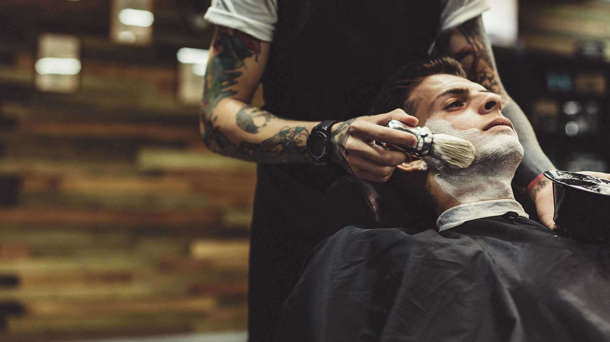

Добро пожаловать в aesthetics of haircuts — место, где стиль и качество объединяются для создания идеального образа! В нашем барбершопе мы объединяем классический стиль и современные тенденции, чтобы создавать безупречные мужские образы. Здесь каждое посещение — это не просто стрижка, а целый ритуал ухода за собой, выполненный профессионалами, для которых важно ваше настроение и внешний вид. Мы гордимся тем, что используем только проверенные средства и современные техники, чтобы добиться наилучшего результата. В нашей дружелюбной и уютной атмосфере каждый клиент чувствует себя как дома, а индивидуальный подход помогает подчеркнуть вашу уникальность. Наши мастера — это команда опытных специалистов, постоянно совершенствующих свои навыки и следящих за последними трендами мужской моды. Мы ценим доверие наших клиентов и стремимся превзойти их ожидания.
Сухие волосы — распространённая проблема, которая может быть вызвана неправильным уходом, частым использованием горячих приборов для укладки или воздействием внешних факторов, таких как солнце, ветер и холод. Сухие волосы выглядят тусклыми, ломкими и трудно поддаются укладке. Однако с этой проблемой можно справиться, если подойти к ней комплексно. Вот несколько советов, которые помогут вернуть вашим волосам здоровье и блеск.
Сухие волосы — распространённая проблема, которая может быть вызвана неправильным уходом, частым использованием горячих приборов для укладки или воздействием внешних факторов, таких как солнце, ветер и холод. Сухие волосы выглядят тусклыми, ломкими и трудно поддаются укладке. Однако с этой проблемой можно справиться, если подойти к ней комплексно. Вот несколько советов, которые помогут вернуть вашим волосам здоровье и блеск.
Укладка волос — это не только способ придать прическе определенную форму, но и способ выразить свою индивидуальность и стиль. В этом обзоре мы поделимся советами по созданию стильной укладки волос, а также предложим техники и рекомендации для достижения желаемого результата.
Выбор мужского парфюма — это не просто покупка, а настоящее искусство. Аромат может подчеркнуть вашу индивидуальность, оставить запоминающееся впечатление и даже стать вашей визитной карточкой. Но как выбрать тот самый уникальный парфюм, который подойдёт именно вам? Давайте разберёмся.